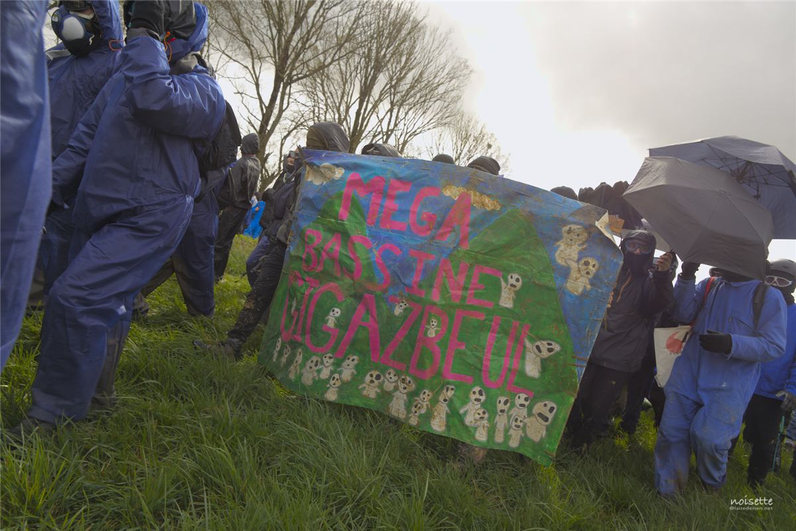
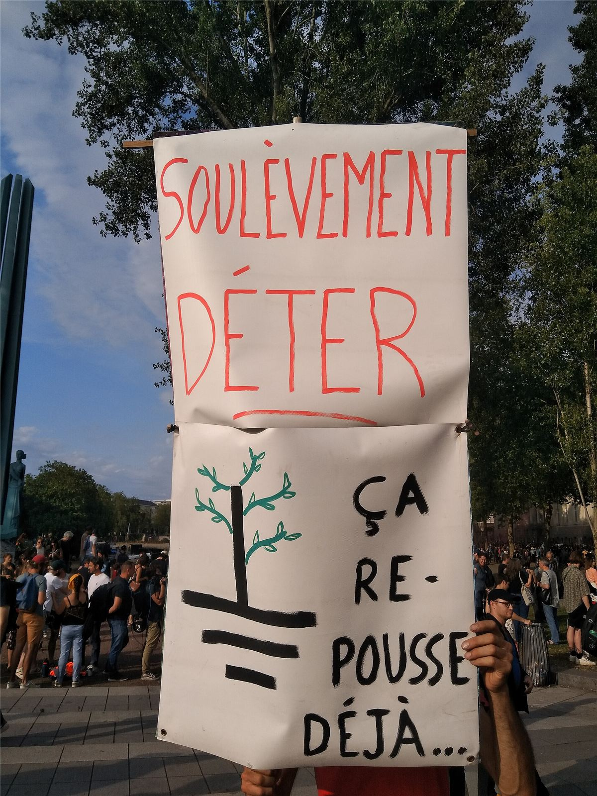

Mamie a des souvenirs de moissons collectives sur le Larzac et de boue à Notre-Dame-des-Landes. Quand elle a vu, en 2023, des dizaines de milliers de gens marcher à travers champs vers une bassine gardée par des milliers de gendarmes, elle a reconnu la même histoire : des gens qui défendent la terre contre ceux qui veulent se l'approprier. Les Soulèvements de la Terre sont l'héritiers de cinquante ans de luttes paysannes et écologistes.
La lignée : le Larzac (1971-1981)
En 1971, l'État veut agrandir le camp militaire du Larzac, dans l'Aveyron, de 3 000 à 17 000 hectares. Le 28 mars 1972, 103 paysans sur 108 concernés signent le « serment des 103 » : aucun ne vendra. Pendant dix ans, ils tiennent, soutenus par des dizaines de milliers de personnes venues de partout : 60 000 à 100 000 au rassemblement de 1973. Les soutiens achètent des parts de terres pour compliquer les expropriations : 3 500 personnes, 6 180 parts. En 1981, le projet est abandonné. Les terres libérées permettent d'installer de nouvelles fermes.
D'autres luttes de terre suivront : Plogoff contre une centrale nucléaire (1978-1981), puis la ZAD de Notre-Dame-des-Landes, qui gagne en 2018. C'est là, en janvier 2021, que naissent les Soulèvements de la Terre.
2021 : un appel à se soulever
Les fondateurs viennent de la ZAD. Leur premier appel est signé par des historiennes et historiens, des écrivains et des paysans. Le principe : une coalition de collectifs locaux, de fermes, de sections syndicales et d'associations, qui choisit chaque saison quelques luttes locales et leur apporte la force du nombre. Les cibles : l'accaparement des terres, la bétonisation, l'agro-industrie et l'eau privatisée. Leur symbole, ⏚, est le signe électrique de la mise à la terre.
Les premières actions visent une carrière de sable en Loire-Atlantique, des jardins populaires menacés à Besançon, des centrales à béton, l'usine Lafarge de Bouc-Bel-Air.
Les méga-bassines

Dans les Deux-Sèvres, des agriculteurs de l'irrigation intensive construisent des « retenues de substitution » : d'immenses bassins bâchés, remplis en pompant les nappes en hiver, pour arroser en été le maïs de quelques grosses exploitations. Les opposants parlent de « méga-bassines » et d'accaparement de l'eau, un bien commun, au profit de l'agro-industrie. Le collectif Bassines non merci les combat depuis des années avec la Confédération paysanne. Les Soulèvements les rejoignent.
25 mars 2023 : Sainte-Soline
Environ 30 000 personnes marchent vers le chantier de la bassine de Sainte-Soline, malgré l'interdiction. En face : 3 200 gendarmes, des blindés, des canons à eau, des quads, des hélicoptères. Pendant des heures, des milliers de grenades lacrymogènes et explosives, et des balles de LBD, sont tirées sur les cortèges, y compris depuis des quads en mouvement.
Bilan : plus de 200 manifestantes et manifestants blessés, dont une quarantaine grièvement selon les associations : fractures, brûlures, pertes d'audition, un œil perdu. La Ligue des droits de l'Homme accuse les gendarmes d'avoir retardé l'accès des secours. Une quarantaine de gendarmes sont blessés. Des vidéos de caméras-piétons publiées en 2025 montrent des tirs tendus illégaux et des gendarmes se félicitant d'avoir blessé des gens.
Le ministre de l'Intérieur, Gérald Darmanin, parle d'« écoterrorisme ». En décembre 2024, la justice déclare illégale l'autorisation de la bassine de Sainte-Soline.
La dissolution ratée
Le 21 juin 2023, le gouvernement dissout les Soulèvements de la Terre par décret. La réaction est immense : des manifestations partout, des dizaines de milliers de personnes qui déclarent publiquement « nous sommes les Soulèvements de la Terre », des soutiens d'associations, de syndicats et d'artistes. Le Conseil d'État suspend la dissolution en août, puis l'annule le 9 novembre 2023 : il juge la mesure disproportionnée et rappelle que les Soulèvements n'ont jamais appelé à la violence contre des personnes.

Chronologie
- 1971-1981Lutte du Larzac : les paysans gagnent.
- 2009-2018ZAD de Notre-Dame-des-Landes : l'aéroport est abandonné.
- Janvier 2021Naissance des Soulèvements de la Terre à la ZAD.
- Octobre 2022Première grande manifestation à Sainte-Soline.
- 25 mars 2023Sainte-Soline : 30 000 personnes, plus de 200 blessés.
- Avril 20238 000 personnes contre l'autoroute A69 dans le Tarn.
- 21 juin 2023Le gouvernement prononce la dissolution.
- 9 novembre 2023Le Conseil d'État annule la dissolution.
- Décembre 2024La bassine de Sainte-Soline est déclarée illégale.
Dans ce dossier
- Une coalition, des saisons, des camps : comment ça s'organise.
- Désarmer, saboter, durer : les débats, et ce qu'en retiennent les libertaires.
Sources et pour aller plus loin
Sur le web
- Les Soulèvements de la TerreCréation, actions, dissolution annulée.
- La manifestation du 25 mars 2023 à Sainte-SolineLe déroulé et le bilan.
- La lutte du LarzacDix ans de désobéissance paysanne.
- L'opposition aux méga-bassinesBassines non merci et les autres.
Sur le site
- La ZAD de Notre-Dame-des-LandesLà où tout a commencé.
- Le parcours Écologie socialeBookchin : pas d'écologie sans fin de la domination.
Dossier écrit à partir des articles Wikipédia cités, à relire par la bande. Sources vérifiées le 13 novembre 2026.
Dossier rédigé par la bande à Mamie à partir de travaux d'historiennes et d'historiens et de textes des mouvements concernés. Libre de reproduction.